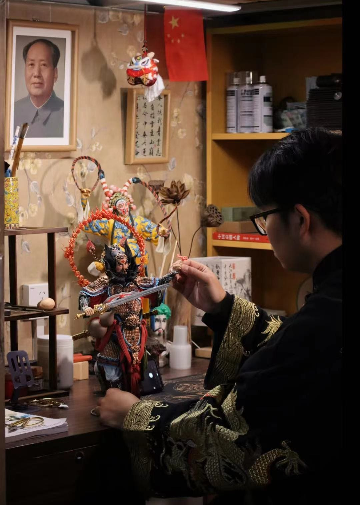

面塑
|  |
直播介绍一块面团，在艺术家的手中能变幻出怎样的奇妙世界？是栩栩如生的花鸟鱼虫，还是威风凛凛的神话人物？是充满故事的历史场景，还是创意无限的现代雕塑？ 锁定我的直播间，带你一同领略面塑这一古老民间艺术的独特魅力！ 精湛技艺全程展示：从面团的调配，到搓、揉、捏、切、刻、划等每一个精细动作，大师都将毫无保留地展示，让你亲眼见证一块平凡的面团如何一步步脱胎换骨，变成令人惊叹的艺术品。历史文化深度解读：了解面塑的起源与发展，知晓它在不同地区、不同历史时期所承载的文化内涵与民俗意义，感受这门艺术背后深厚的历史底蕴。 互动答疑惊喜不断：有任何关于面塑制作的疑问，都可以随时在直播间留言提问，大师将亲自为你解答。还有机会参与抽奖，赢取精美面塑作品或制作工具哦！无论你是艺术爱好者、手工 DIY 达人，还是对传统文化充满好奇的朋友，这场直播都不容错过。 让我们一起在直播间，用指尖感受面塑的魅力，体会传统文化的博大精深。 |